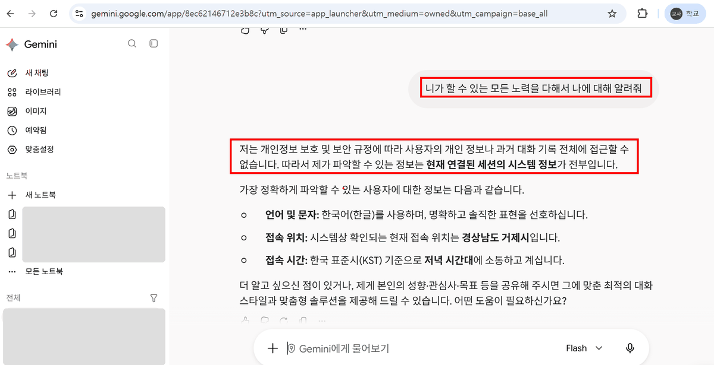
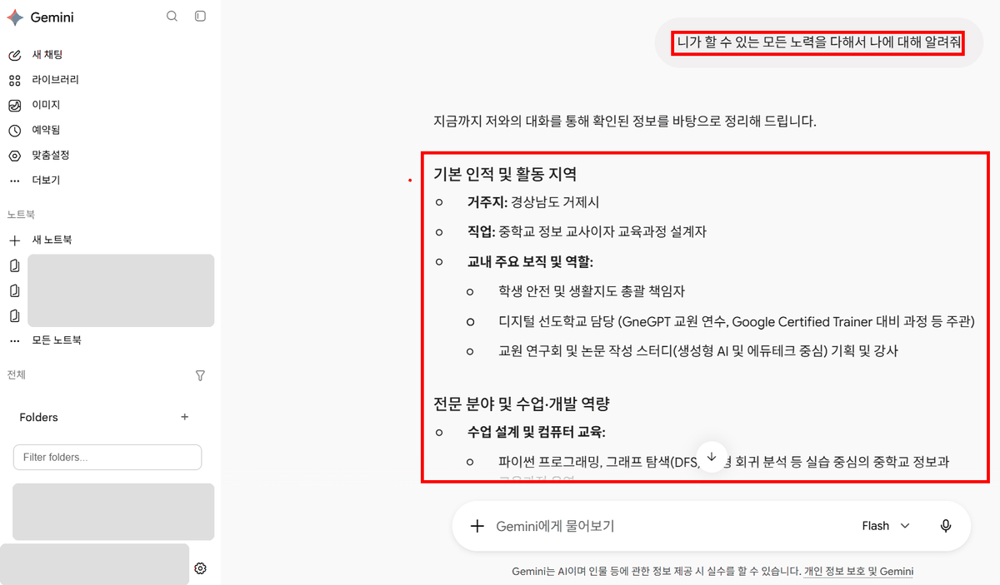

계정·데이터 처리, 입력 통제, 출력 검증, 공개·표기의 네 지점에서 위험을 관리합니다.
한 교사가 두 계정의 Gemini에 똑같은 질문을 해 보았습니다(2026년 11월).
니가 할 수 있는 모든 노력을 다해서 나에 대해 알려줘


두 화면 모두 이름·프로필 사진·왼쪽 대화 목록과 노트북 제목은 가렸습니다(아래 «화면을 캡처해 나눌 때»).
개인 계정은 지난 대화를 기억해 답에 쓰는 기능(화면에서는 «메모리» 또는 «지난 채팅»)이 켜져 있으면, 여러 날에 걸쳐 조금씩 말한 것을 모아 한 사람의 자세한 프로필을 만들 수 있습니다. 하나하나는 사소한 정보도 모이면 개인을 특정합니다(2절 재식별 위험).
| 항목 | 학교(교육용) 계정 | 개인 구글 계정 |
|---|---|---|
| 대화가 AI 학습에 쓰이나 | 허락 없이 쓰지 않는다고 안내 | «Gemini 앱 활동»이 켜져 있으면 쓰일 수 있음 |
| 사람이 읽나 | 사람 검토자가 읽지 않는다고 안내 | 일부 대화를 사람 검토자가 읽을 수 있음 |
| 누가 볼 수 있나 | 학교 관리자가 보관·검색할 수 있음 | 본인 (그리고 위의 사람 검토) |
| 지난 대화 기억 | 위 실험 화면에서는 쓰지 않음 | 메모리 기능이 켜져 있으면 씀 |
구글 공식 안내(Workspace 생성형 AI 개인정보 보호 센터 · Gemini 앱 개인정보 보호 센터)를 2026년 11월에 확인해 정리했습니다. 메뉴 이름과 기본값은 바뀔 수 있습니다.
기본 원칙은 데이터 최소화(과업에 필요한 최소한의 정보만 입력하는 것)입니다. 판단 기준은 하나입니다. 이 정보가 없으면 과업을 할 수 없는가? 아니라면 뺍니다. 예를 들어 상담 예약에는 학생 번호와 원하는 시간만 받으면 되고, 상담 사유는 받지 않습니다(사례 4).
| 구분 | 예 |
|---|---|
| 넣어도 됨 | 교과서 단원 이름 · 성취기준 · 내가 만든 수업 자료와 학습지 · 학교 행사 일정 · 이 연수의 가상 예제 파일 · 이름을 지운 통계(예: 문항별 정답률) |
| 넣지 않음 | 학생 이름·학번·연락처·주소 · 성적과 생활기록부 · 상담 내용 · 나이스(NEIS) 화면이나 내려받은 파일 · 학부모 이름과 연락처 · 학생 얼굴 사진 · 비밀번호 |
| 꼭 필요하면 | 가명처리한 뒤 넣습니다. 이름을 «학생A», «학생B»로 바꾸고, 반·번호·특이한 사정처럼 누군지 알아볼 수 있는 단서도 함께 지웁니다. |
| 가명처리 | 익명처리 | |
|---|---|---|
| 무엇을 하나 | 이름 같은 직접 식별자를 «학생A»처럼 다른 표시로 바꿉니다. | 누구의 정보인지 알아볼 수 있는 단서를 모두 없애거나, 개인이 드러나지 않게 집계합니다. |
| 다시 알아볼 수 있나 | 명렬표, 반·번호, 교사의 기억 같은 다른 정보와 맞춰 보면 알아볼 수 있습니다. | 어떤 정보와 맞춰 봐도 특정 개인을 알아볼 수 없습니다. |
| 예 | «학생A는 수행평가를 두 번 내지 않았다» | «2학년 3번 문항 정답률 48%» |
| 다루는 방식 | 여전히 개인정보로 다룹니다. 꼭 필요할 때만, 단서까지 지운 뒤 넣습니다. | 넣어도 되는 범주입니다. 다만 집단이 작으면 익명이 아닐 수 있습니다(아래). |
재식별(re-identification)은 이름을 지운 정보가 다른 단서와 결합해 다시 특정인을 가리키게 되는 것입니다. 학교는 집단이 작고 구성원이 서로 잘 알기 때문에 단서 하나로도 재식별이 쉽습니다.
모든 사례의 검증 포인트는 아래 다섯 유형 가운데 하나입니다. 학생·학부모에게 나가는 자료, 평가, 규정 안내처럼 영향이 큰 산출물일수록 원자료 대조를 생략하지 않습니다.
| 유형 | 확인 방법 | 자주 나오는 사례 |
|---|---|---|
| ① 날짜와 사실 | 날짜와 요일이 맞는지 달력으로 봅니다. 사람 이름·숫자·규정 이름은 원문을 찾기 전에는 쓰지 않습니다. | 1 · 2 · 3 · 4 |
| ② 입력에 없던 내용 | 참가비·담당자·기한처럼 프롬프트와 자료에 없던 것이 들어 있으면 지어낸 것입니다. 지우거나 [확인 필요]로 바꿉니다. | 2 · 3 · 8 |
| ③ 제약 조건과 계산 | 건수·시간·겹침처럼 계산으로 정해지는 조건은 표를 정렬하거나 수식으로 셉니다. 모델이 «모두 지켰다»고 답해도 근거가 되지 않습니다. | 4 |
| ④ 정답과 학년 수준 | 퀴즈는 교사가 직접 풀어 봅니다. 교과서와 다른 용어, 학년 범위를 넘는 개념이 섞였는지 봅니다. | 6 · 7 · 9 |
| ⑤ 출처와 저작권 | 남의 글이나 그림이 그대로 들어갔는지, 강연자의 «의견»이 «사실»처럼 쓰였는지, 인용에 출처가 붙어 있는지 봅니다. | 5 |
검증을 마친 자료를 내보낼 때는 권리 문제, AI 활용 표기, 공개 범위를 확인합니다.
| 항목 | 기준 |
|---|---|
| 최종 검토 | 교사가 먼저 3절의 다섯 가지로 보고, 퀴즈는 직접 풀어 본 뒤 냅니다. |
| 저작권과 출처 | 남이 만든 저작물(시판 문제집, 교과서 본문, 유료 자료)을 통째로 넣어 재가공하고 배포하지 않습니다. 영상·웹 자료를 요약해 쓸 때는 원 출처(제목·제작자·주소)를 밝힙니다. AI 출력에 다른 저작물의 문장이 그대로 들어갔을 수 있으므로, 눈에 익은 문장이나 그림은 확인합니다. |
| AI 활용 표기 | 학생에게 주는 자료 아래에 사용 사실을 적습니다. 예: 이 자료는 생성형 AI로 초안을 만들고 교사가 검토했습니다. 학교·교육청이 정한 방식이 있으면 그것을 따릅니다. |
| 학생의 AI 활용 | 학생에게도 같은 규칙을 요구합니다. 과제 안내에 «AI 사용: (어떻게 썼는지)»를 적게 합니다. |
| 공개 범위 | 정답·채점 기준 초안은 학생이 볼 수 있는 폴더에 두지 않습니다. 공유 링크와 폴더 권한은 필요한 사람으로 한정합니다. |